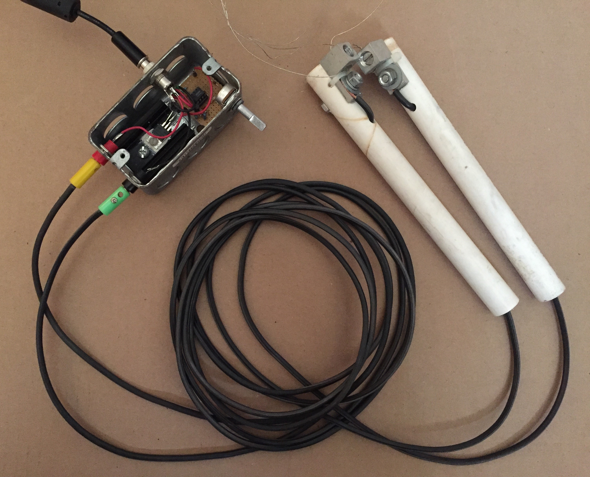
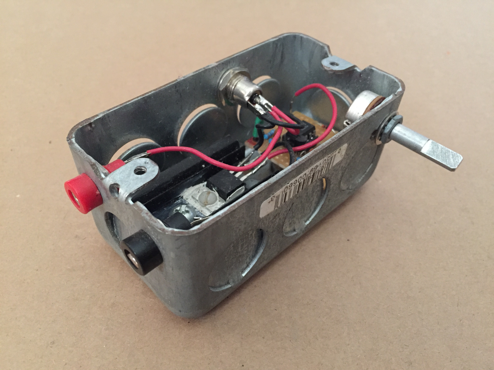
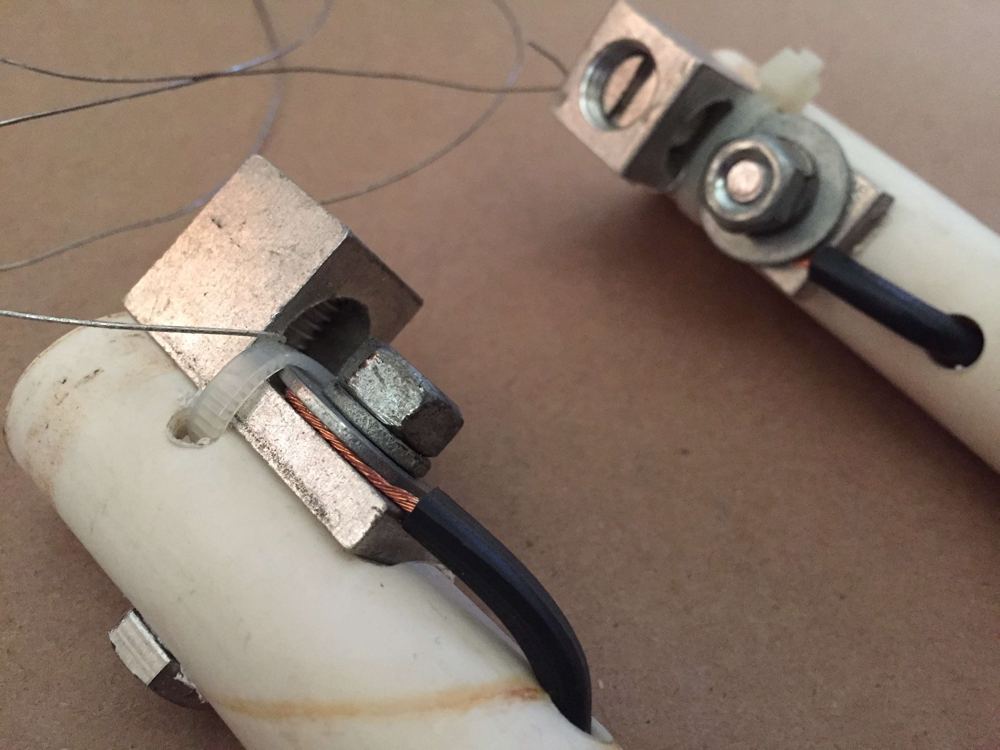

Hot Wire Foam Cutter
One of the projects I worked on with Mariah required the fabrication of about a thousand cubic feet worth of various polystyrene forms. Some were simple geometric shapes and others were not.

Some of the simpler designs were presented to industrial foam fabricators, but the quoted costs were astronomical. Thus, the duty of fabrication fell to me. Now, the nicest way to cut polystyrene foam is with a hot wire, so a small part of the job was designing and constructing an appropriate and convenient electronic resistive heater. Here is the cutter I ended up making:
This is a really simple solution. It operates with a 24-50VDC power supply, and the only control is a single turn pot which varies the PWM duty applied to a low side switch. The cutting element is a length of 26AWG nicrome heater wire, which is connected to the controller via some low voltage outdoor lighting cable. Here is a little close up of the controller:
The circuit is just a variable duty astable 555 timer configuration, powered from a simple zener shunt regulator, and directly driving the gate of an IRF540 N-channel hexFET. This is not really the best way to drive this switch, but it was adequate for what I had to do. If I had to do it again I would spice the FET driver up a bit.
Here is a closeup of the wire clamps on the handles:
These worked out pretty good. I will add some more content to this page, but in the meantime, check out the final product and see if you can spot the foam.